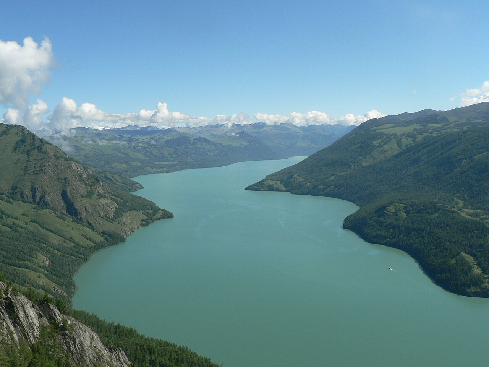

北疆环线以阿尔泰山、准噶尔盆地与天山北麓为主线，集中了喀纳斯、禾木、赛里木湖、那拉提等顶级景观。夏季草原碧绿、冬季则银装素裹，是新疆自驾最受欢迎的区域之一。
经典走向：乌鲁木齐—可可托海/五彩滩—布尔津—喀纳斯—禾木—克拉玛依—赛里木湖—伊宁—那拉提/巴音布鲁克（可选）—乌鲁木齐。喀纳斯与禾木需换乘景区交通，私家车不得进入核心村，需提前规划行李与停车。
新疆地域辽阔，单日 400–600 公里很常见，但限速与区间测速严格。检查站较多，身份证、驾驶证随时备查。6–9 月旅游旺季住宿紧张，禾木、喀纳斯小木屋需提前预订。
Itinerary
分日行程
乌鲁木齐 → 五彩滩 → 布尔津
长途奔袭至布尔津，傍晚可访五彩滩看额尔齐斯河雅丹日落。河鱼夜市可尝冷水鱼，为喀纳斯储备体力。
布尔津 → 喀纳斯
驾车至贾登峪换乘景区巴士，游览三湾（神仙湾、月亮湾、卧龙湾）与观鱼台。湖水颜色随季节与光线变化，9 月秋色斑斓。
喀纳斯 → 禾木
换乘前往禾木村，图瓦人木屋与禾木河构成经典画面。清晨登禾木观景台看晨雾与炊烟，是北疆最诗意时刻之一。
禾木 → 克拉玛依
出景区经布尔津南下，穿越准噶尔盆地边缘。可选停魔鬼城看风蚀地貌。克拉玛依为工业城市，补给与维修条件好。
克拉玛依 → 赛里木湖 → 伊宁
经果子沟大桥抵达赛里木湖，环湖或选点停留。湖水湛蓝，与天山雪峰同框。下午至伊宁，可逛六星街感受多元文化。
伊宁 → 那拉提/昭苏（可选）
若走那拉提空中草原，可体验哈萨克牧区生活。6 月昭苏油菜花海亦可选。视季节与兴趣二选一。
那拉提 → 乌鲁木齐
经独库公路北段或绕行 G218 返回乌鲁木齐。若独库开放且时间允许，一日穿越天山是难忘体验。
Photo Essay
沿途影像



Highlights
核心景点
喀纳斯湖
阿尔泰山深处的冰蚀湖，三湾与观鱼台是标准游览线。关于「湖怪」的传说增添了神秘色彩，秋层林尽染时最为拥挤也最为值得。
禾木村
图瓦人聚居地，木屋、白桦林与晨雾构成「神的自留地」画面。摄影爱好者常凌晨占机位，需注意保暖与尊重村民生活。
赛里木湖
新疆海拔最高、面积最大的高山湖泊之一，湖水清澈呈蓝宝石色。环湖公路已贯通，可自驾选点露营（遵守景区规定）。
五彩滩
额尔齐斯河北岸的彩色雅丹，日落时分红、黄、紫层次丰富。与南岸绿洲形成「一河两岸，两重天」的对比。
魔鬼城
乌尔禾风蚀地貌，造型如城堡与怪兽。傍晚光影与风声营造荒凉美学，是《卧虎藏龙》等影片的外景地之一。
Route
途经站点
新疆门户
租车、补给、办理边防证（若去边境）。
喀纳斯门户
河鱼美食与河滩夜市，加油满箱。
核心景区
贾登峪换乘，住宿在景区内需提前订。
晨雾摄影
私家车停贾登峪或禾木入口，村内交通受限。
高山湖泊
果子沟大桥为必经地标，注意横风。
环线终点
视那拉提、独库等支线增减里程。
Practical
实用信息
- 新疆实行北京时间但日落晚，合理安排行车，避免深夜疲劳驾驶。
- 喀纳斯、禾木景区内物价较高，可备些零食与常用药。
- 边境地区可能需边防证，提前在户籍地或乌鲁木齐办理。
- 草原与湖区蚊虫较多，备驱蚊液；紫外线强，全程防晒。
- 尊重哈萨克、图瓦等民族习俗，进入毡房需脱鞋，接受茶食用右手。
EV Tips
新能源出行提示
驾驶腾势 N7 等纯电 SUV 出发前，请特别注意以下事项：
- 乌鲁木齐、克拉玛依、伊宁快充较完善，喀纳斯、禾木景区以慢充为主，建议出景区前在布尔津或克拉玛依补满电。
- 新疆地域辽阔，单日里程长，出发前用 App 规划沿途充电站并留 25% 冗余。
- 夏季地面温度高，长时间暴晒后注意电池散热，尽量选择阴凉处停车。